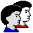

Run back
Run back
You can call me Hung!
Or don't. Do whatever you want. I'm not your mom.
I’m a student in college currently pursuing my bachelors for economics and minoring in law & ethics @ Seneca Polytechnic. I plan to attend law school in UofT + NYU. I also have plentiful experience in coding, mainly in HTML, Python, C, C++ and Luau. Currently attending Seneca polytechnic, LOA @ UofT.
My current employment status is: Student
Coding
Photography
I’ve had a logical mindset since I was young. I’ve also taken an interest in anything computer related. So naturally, coding was fun for me.
But of course, all computer engineers and computer science majors know the struggle of serious projects & debugging whilst figuring out what the hell a repository is. On top of that, Calculus II & III is destructive.
Fun fact: This website is actually my first serious coding project. That will change in the future, and will be displayed here for whoever is interested in following along!


Works taken on Canon EOS R5 Mark II + RF 28-70mm f/2.8 IS STM Lens & Nikon D3500
Socializing & Networking
Sports & Physical Activity
I deeply enjoy engaging with folks in my communities! Making friends and connections is something I already do naturally, so making business relations and connections is something very beneficial to me.
I also take pride in my ability to form and deepen my business connections and constant strive to find new opportunities. These include social events, seminars, and even just hanging out on my campus.
This is not limited to the physical world. I often enjoy socializing online as well!

Badminton:
- Emery Collegiate Team 2024
- Seneca Sting 2025
GYM:
- Gymming since 2024